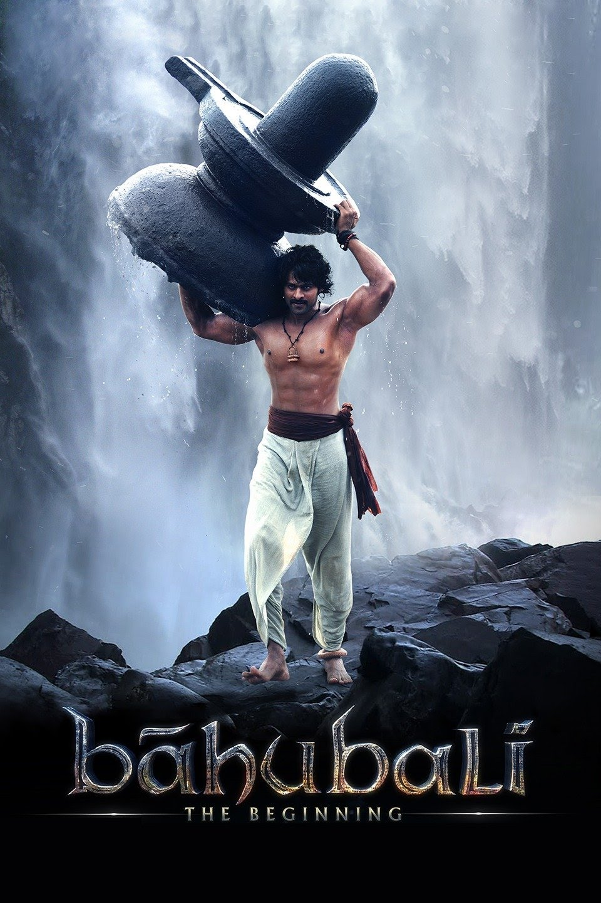
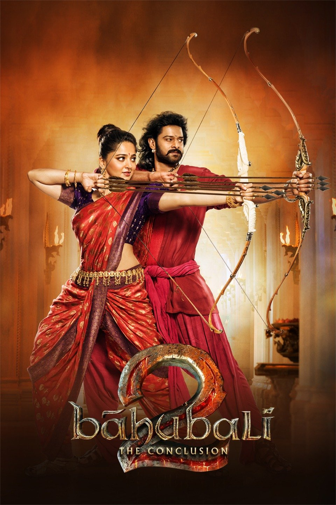
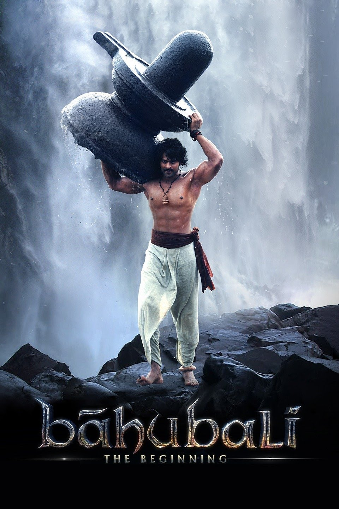
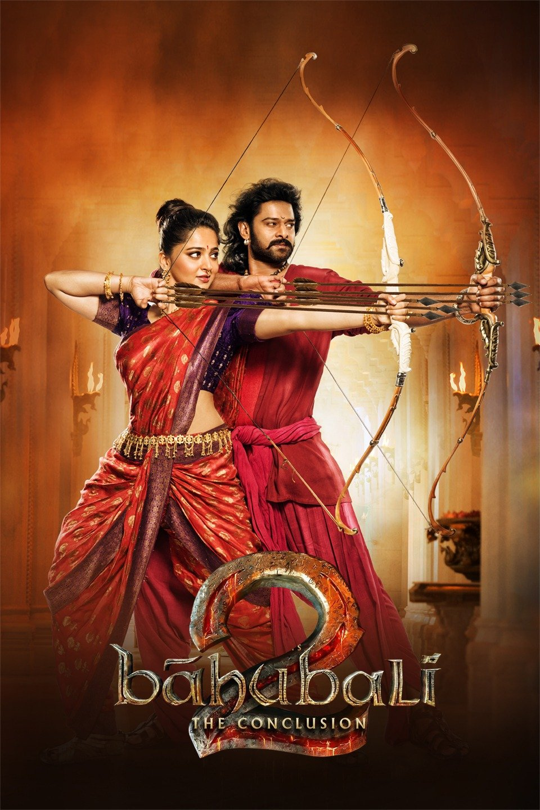

| Movie | Year of Release | Description |
|---|---|---|
| Titanic |
1997 | A seventeen-year-old aristocrat falls in love with a kind but poor artist aboard the luxurious, ill-fated R.M.S. Titanic. |
| The Shawshank Redemption |
1994 | Two imprisoned men bond over a number of years, finding solace and eventual redemption through acts of common decency. |
| Baahubali: The Beginning  |
2015 | In ancient India, an adventurous and daring man becomes involved in a decades old feud between two warring people. |
| Baahubali: The Conclusion  |
2017 | When Shiva, the son of Bahubali, learns about his heritage, he begins to look for answers. His story is juxtaposed with past events that unfolded in the Mahishmati Kingdom. |
| The Dark Knight |
2008 | When the menace known as the Joker emerges from his mysterious past, he wreaks havoc and chaos on the people of Gotham. The Dark Knight must accept one of the greatest psychological and physical tests of his ability to fight injustice. |
| 12 Angry Men |
1957 | A jury holdout attempts to prevent a miscarriage of justice by forcing his colleagues to reconsider the evidence. |
| Fight Club |
1999 | An insomniac office worker and a devil-may-care soapmaker form an underground fight club that evolves into something much, much more. |